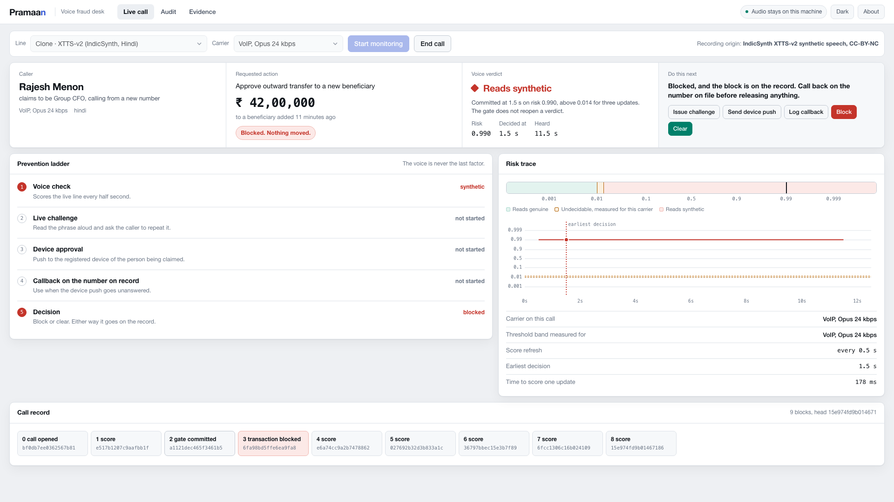
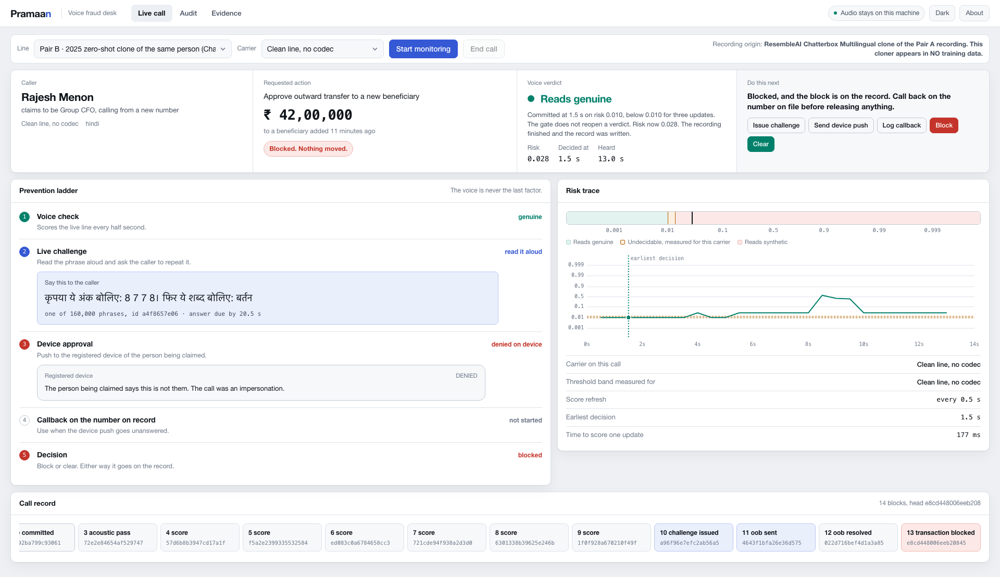
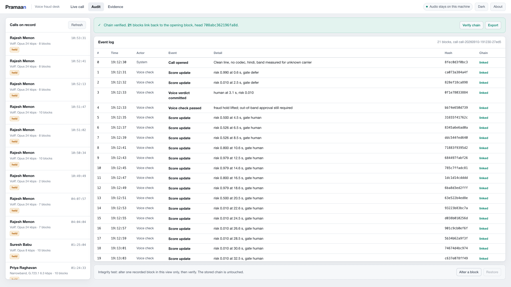
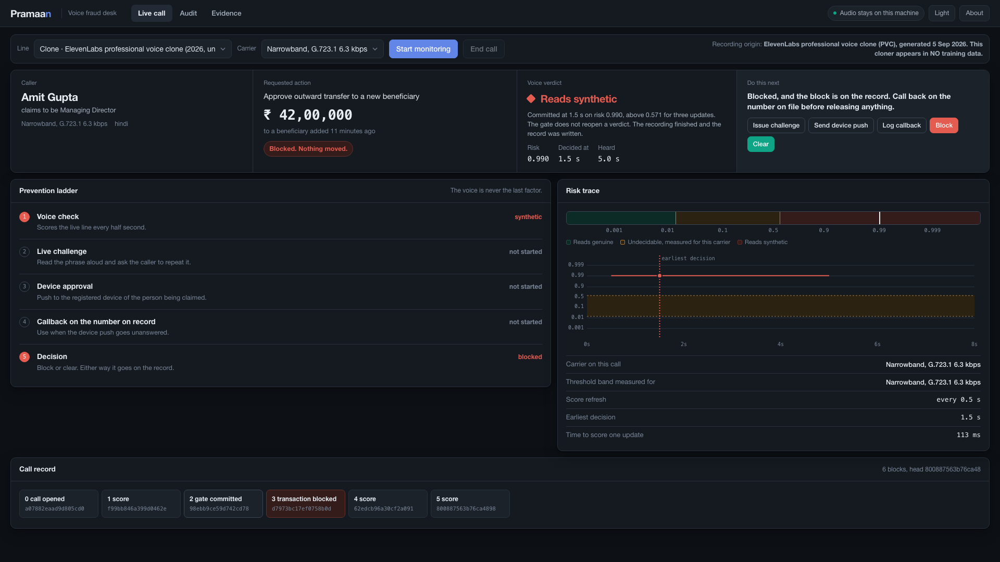

Streaming voice-clone attack detector for degraded phone channels.




SIH 2026 | PS SIH26104 | AICTE Cyber Security Cell | Software | Blockchain and Cybersecurity AI-Powered Real-Time Detection and Prevention of Voice Cloning Impersonation Attacks
Pramaan (प्रमाण, proof) is a real-time voice-clone defence for high-value phone approvals. It listens to the live call on the device, scores it every half second, and never lets the voice be the last factor: uncertain calls get a challenge, high-value actions get device approval, and every step is written to a tamper-evident ledger.
Every number in this file is produced by eval/experiments.py and eval/latency.py into eval/results.json and eval/results/latency.json, and this README is generated from those files by scripts/fill_numbers.py.
| Part | What it is |
|---|---|
| Listener | Frozen facebook/wav2vec2-xls-r-300m (128 languages), layer 5, mean+std pooling. A head of 2,049 trained parameters. Isotonic calibration per prefix length, so 0.8 means 80%. |
| Gate | Streaming commit-or-defer. Commits only after 1.5 s of real audio (never tile-padded), outside an uncertain band, stable for three updates. The band is derived per channel from bona fide speech alone at a 2% false-positive budget, never hand-set: [0.010, 0.014] on the clean line, [0.014, 0.571] on a G.723.1 6.3 kbps line, because genuine speech scores higher the harder the codec squeezes it. |
| Prevention ladder | Live challenge (random digits and word in the caller's language, 160,000 combinations), out-of-band push to the claimed person's registered device, callback, operator block or clear. A high-value action is never cleared by the voice alone. |
| Warrant | Authorization, not detection. A disclosed voice agent is synthetic on purpose, so a signed attestation on the channel lowers the actionable risk while the synthetic verdict stands. Monotone by construction: a warrant may only ever lower risk, never raise it, enforced by an assert in src/pramaan/warrant.py, because every audio provenance signal published so far is forgeable in both directions (removal and forgery). Absent or invalid changes nothing, which is the ordinary state of a human call. Token path only; this repo embeds and detects no audio watermark. |
| Ledger | SHA-256 hash chain per call. Every score, verdict, challenge and approval is a block; editing any past block breaks every later hash. Verify endpoint, exportable for on-chain anchoring. |
| Telephony | Seven codec conditions applied at train and test time: clean, Opus 24k, Opus 8k, G.722, G.726, G.723.1, Speex WB. AMR-WB and EVS are listed as absent because the toolchain cannot encode them. |
Bona fide speech: FLEURS Hindi, Tamil, Telugu (510 recordings, CC-BY 4.0). Synthetic speech: 8 generator families built locally from the same sentences, plus a 2025 zero-shot cloner (Chatterbox) held out entirely. 70,424 cached embeddings across codecs and prefix lengths.
Generalisation vs generator diversity. Hold out the 2025 cloner. Train with k families, over random subsets. With few families the outcome depends on which you have (as bad as 39.6%); with all 8 it is 13.2% regardless. The previous build of this project, trained on two families with an unweighted PCA head, scored 35.9% on the same cloner.
Leave-one-generator-out, clean channel. Train on every other family, score the held-out one against held-out genuine speech:
| held out | EER |
|---|---|
| XTTS-v2 | 0.0% |
| FreeVC voice conversion | 0.0% |
| EnCodec resynthesis | 24.4% |
| Apple on-device TTS | 0.0% |
| Meta MMS | 0.8% |
| Kokoro-82M | 0.0% |
| eSpeak NG formant synthesis | 0.0% |
| Piper | 0.0% |
| Chatterbox 2025, same speaker and sentence | 13.2% (95% CI 4.7% to 21.9%) |
The unseen-cloner row is the honest headline. It clones the exact recording it is scored against, so corpus, speaker and content cannot be the tell. It is also why the prevention ladder is mandatory for high-value actions.
Error bars, and the two clip counts. The headline 13.2% is an EER over 23 held-out clones and 127 held-out genuine recordings, so its 95% interval is wide: 4.7% to 21.9%, from a cluster bootstrap that resamples parent recordings rather than clips, because a bona fide recording and the clone made from it are one unit under this protocol and not two independent draws. The corpus holds 39 Chatterbox clips in total; 23 of them fall in the test split of parent recordings, which is the subset the leave-one-generator-out headline is scored on. The shipped head never trains on any Chatterbox clip, so it can be scored on all 39, and there its EER is 5.7% (95% CI 3.0% to 8.8%). Both counts are correct and they belong to different protocols. Every interval in this repo is in eval/results.json under confidence.
Streaming. First decision at 1.5 s. Gate replay on seen families, clean channel: coverage 100.0%, committed-call error 0.0%, false alarms on genuine speech 0.0%, median decision at 1.5 s.
Gate replay per channel. The band is derived per channel, so the replay is run per channel. No false-alarm number in this repo is quoted without the channel it was measured on.
| channel | gate coverage | committed-call error | false alarms on genuine speech |
|---|---|---|---|
| clean | 100.0% | 0.0% | 0.00% |
| Opus 24 kbps | 30.1% | 0.0% | 0.00% |
| G.722 64 kbps | 30.1% | 0.0% | 0.00% |
| G.726 32 kbps | 30.1% | 0.0% | 0.00% |
| Speex WB | 29.8% | 0.0% | 0.00% |
| Opus 8 kbps | 29.1% | 0.0% | 0.00% |
| G.723.1 6.3 kbps | 29.6% | 0.4% | 0.79% |
Worst false-alarm cell across the seven channels: 0.79% on G.723.1 6.3 kbps, 95% CI 0.14% to 4.33%, which is one false alarm in 127 genuine recordings on that channel and not a rate measured to two decimal places. Coverage on the six codec channels is 29.1% to 30.1% against 100.0% on clean for a cached-data reason, not a model reason, and the reason is the generator rather than the channel: only 2 of the 9 generator families, counting the held-out cloner, are cached at more than one prefix length on a codec channel, every other family is cached at 4.0 s alone, and the Gate needs three stable updates at or above 1.5 s before it may commit. Genuine speech, which is cached at four or eight prefixes on every channel, commits at 100.0% on clean. The clips it does not commit on are deferred, not decided wrongly.
The same Gate, in every held-out-generator direction. The table above replays one head that trained on every family it is then scored on, so its committed-call error is in sample and is not a generalisation claim. This table trains a separate head per direction on the other families only and replays the Gate on the held-out one against held-out genuine speech, clean channel, which is the only channel where every direction is measurable:
| held out of training | held-out clones | gate coverage on those clones | committed-call error, 95% CI | false alarms on genuine speech |
|---|---|---|---|---|
| XTTS-v2 | 60 | 58.3% | 6.2% (3.4% to 11.0%) | 0.00% |
| FreeVC voice conversion | 66 | 100.0% | 0.5% (0.1% to 2.9%) | 0.79% |
| EnCodec resynthesis | 127 | 93.7% | 45.1% (39.0% to 51.4%) | 0.00% |
| Apple on-device TTS | 82 | 100.0% | 0.0% (0.0% to 1.8%) | 0.00% |
| Meta MMS | 127 | 96.9% | 4.0% (2.2% to 7.2%) | 3.94% |
| Kokoro-82M | 43 | 100.0% | 0.0% (0.0% to 2.2%) | 0.00% |
| eSpeak NG formant synthesis | 127 | 100.0% | 0.0% (0.0% to 1.5%) | 0.00% |
| Piper | 82 | 100.0% | 0.0% (0.0% to 1.8%) | 0.00% |
| Chatterbox (held-out 2025 cloner) | 23 | 87.0% | 11.6% (7.3% to 17.7%) | 0.00% |
EnCodec resynthesis is the worst direction at 45.1% committed-call error (95% CI 39.0% to 51.4%) on 127 held-out clones, which is the same family the leave-one-generator-out EER table already reports as the hardest cell, and the Gate commits on it rather than deferring. Holding out Meta MMS is the worst false-alarm direction at 3.94% (95% CI 1.69% to 8.89%) against 0.00% for the in-sample head. On the six codec channels 42 of the 63 cells cannot commit on the held-out clones at all, because those clones are cached at 4.0 s alone there; their genuine halves are still measured and are in eval/results.json under streaming_leave_one_out.
At the shipped band on full 4 s clips, genuine speech is called synthetic 0.4% of the time on the clean channel and 1.1% pooled across all 7 channels (3,570 genuine recordings), worst channel 1.6% on G.726 32 kbps.
Loudspeaker to microphone. A clip played out of a speaker and recorded back through the laptop microphone is a real attack path and the one a judge is most likely to trigger by holding a phone up to the laptop. The channel is not part of the seven-codec telephony grid, so the live path falls back to the most degrading band it has measured, G.723.1 6.3 kbps (src/pramaan/stream.py). Two rows, because one alone would mislead:
| channel | clips | EER, shipped head | EER, channel held out of training | clones called synthetic | genuine called synthetic |
|---|---|---|---|---|---|
| replay_mic | 99 (50 genuine, 49 clones) | 2.0% | 18.2% (95% CI 10.0% to 25.2%) | 75.5% | 14.0% |
| replay_mic_v0.4 | 100 (50 genuine, 50 clones) | 2.0% | 12.0% (95% CI 4.9% to 18.0%) | 84.0% | 4.0% |
The shipped column is in sample: ship() trains on these rows at a weight of 30 because the demo runs on this path, so 2.0% is not a generalisation claim and is printed only so the two are not confused. The held-out column removes every replay row from training and is the number that answers "what happens on a channel you did not train on"; the recordings themselves are still in training through their clean and codec versions, so it is a channel-shift measurement and not a held-out-clip one. The false-alarm figure is the larger problem: 14.0% of genuine speech through the speaker is called synthetic on the held-out head, against 1.1% on the telephony grid. This is the worst surface in the project and it is printed rather than hidden.
Calibration. Expected calibration error on the unseen cloner: raw sigmoid 0.05, Platt 0.08, isotonic 0.08.
Repair cost. Adapting on 12 labelled recordings of the unseen cloner takes held-out error on it from 18.8% to 0.0%, scored on speakers the adapted model never saw.
Latency on a MacBook Air M4. 185 ms per update on CPU for a 4 s window (RTF 0.046), 104 ms on MPS. 5.4 concurrent calls per CPU core at a 1 s update; 37 cores for a 200-seat centre at full concurrency, no GPU.
make features # cache frozen embeddings (resumable)
make eval # every number, then the shipped model
make latency # forward latency on this machine
make samples # bundle the demo samples with their true origins
make deck # ppt/Pramaan_SIH2026_Idea.pptx from results.json
make demo # operator console on http://127.0.0.1:8770, offline
The console streams either the laptop microphone or a bundled sample through the same live pipeline, chunk by chunk in real time, and always displays the sample's true origin.
XLS-R (Apache-2.0), FLEURS (CC-BY-4.0), EnCodec (MIT), Kokoro-82M (Apache-2.0), Chatterbox (MIT). IndicSynth (CC-BY-NC) and Meta MMS-TTS (CC-BY-NC-4.0) are research-only; a production model retrains on licensed or self-generated data.
src/pramaan/ frontend, model, gate, stream, challenge, ledger, channels, server, ui/
eval/ build_features, experiments, latency, head_sweep, results.json
scripts/ generators, samples, deck, diagram, fill_numbers, demo.sh
docs/ PRESENTATION_SCRIPT, QA_PREP, RUBRIC_MAP, RUNSHEET (generated from templates/)
ppt/ SIH template, generated deck, chart assets